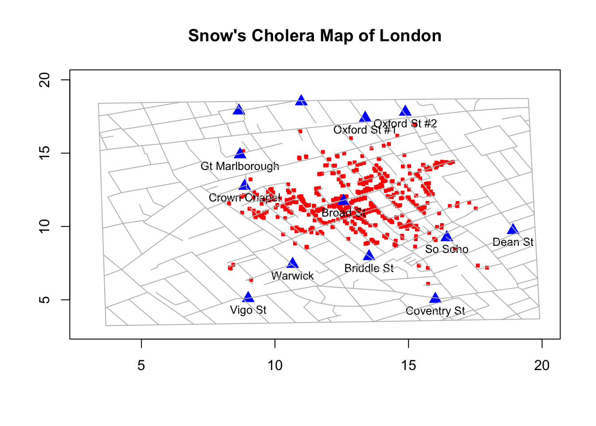

POL S/CS&SS 501, University of Washington, Spring 2015
$$ \DeclareMathOperator{\mean}{mean} \DeclareMathOperator{\var}{var} \DeclareMathOperator{\E}{E} \DeclareMathOperator{\argmin}{argmin} \DeclareMathOperator{\argmax}{argmax} $$Reading Data in R
Andreu Casas
January 9, 2016
Learning Objectives
- Reading data form R packages
- Read and write csv files
- Read and write other type of data formats: STATA, SPSS, XLS…
- Replication, Dataverse, and getting data from an external source
R Projects
Keeping all the files associated with a project organized together – input data, R scripts, analytic results, figures – is such a wise and common practice that RStudio has built-in support for this via its projects. Read this for more information about RStudio projects.
You will use RStudio projects for your labs and homework. Create a RStudio project that you will use for all your labs.
- File -> New Project
- Select “New Directory”
- Select “Empty Project”
- Select a name for your project as Directory Name. “POLS_501_Labs” is as good as any, and better than most. Then choose where to put this directory with “Create project as sub-directory of”. Don’t worry about the other options.
- Create a new directory within “POLS_501_Labs” called “lab1”
- Create a new directory within “lab1” called “data”
- Open this new project and open a new R script where you will be writing (and copy-pasting) and running code.
In lab I’ll do live-coding and we’ll use R scripts to take notes and write the code:
- Open a new R script
- Write a title
- Your name (and email?)
- Date
1. Reading data from R packages
Some R packages have datasets that you can load if you have those packages installed and loaded. The base package already comes with some datasets. To view the datasets, use the function data(). To load a specific dataset, use the same function and add the name of the dataset as a parameter: e.g. data(UCBAdmissions).
Challenge
- Load any dataset you like
- Explore it. Tell me what type of information contains, its dimensions, variables, etc.
Use the functions:
dimshows the dimensions of the data frame as the number of rows, columnsstrshows the internal structure of an R objectnamesshows the column names of the data frame.headshows the first few observationstailshows the last few observationssummarycalculates summary statistics for all variables in the data frame.
When we load new packages that have datasets within them, R adds them to the data() list. Actually some packages have no functions, only dataset/s: e.g. gapminder and HistData. Let’s load the HistData package and take a look at the datasets it contains using the data() function and also the help file of the package.
install.packages("HistData")library("HistData")data()
?HistDataThe help files give us a brief description of packages, functions, and its parameters. A very useful characteristic of help files is that they come with sample code (scroll-down to the bottom of the help file to find it).
Let’s explore a help file: click to the help file for the Snow dataset in HistData.
Challenge
Do you know about John Snow’s 1854 London Cholera Outbreak study and his visualization of the Pump on Broad Street? Google it and see if you can find the map-visualization.
{kind=link}
Now let’s try to replicate his map using this R package/dataset. Scroll down to the bottom of the help file and copy and runt the following lines of code:
data(Snow.deaths); data(Snow.pumps); data(Snow.streets); data(Snow.polygons)
Sdeaths <- function(col="red", pch=15, cex=0.6) {
# make sure that the plot limits include all the other stuff
plot(Snow.deaths[,c("x","y")], col=col, pch=pch, cex=cex,
xlab="", ylab="", xlim=c(3,20), ylim=c(3,20),
main="Snow's Cholera Map of London")
}
Spumps <- function(col="blue", pch=17, cex=1.5) {
points(Snow.pumps[,c("x","y")], col=col, pch=pch, cex=cex)
text(Snow.pumps[,c("x","y")], labels=Snow.pumps$label, pos=1, cex=0.8)
}
Sstreets <- function(col="gray") {
slist <- split(Snow.streets[,c("x","y")],as.factor(Snow.streets[,"street"]))
invisible(lapply(slist, lines, col=col))
}Finally, let’s plot the dataset using the functions we just created (copied from the help file).
Sdeaths()
Spumps()
Sstreets()
Read and write csv files
One of the most common data formats is the CSV (Comma Separated Values). CSV datasets are easy to share and read using multiple statistical software.
Download the dataset wdi_sample.csv from the following link and save it in lab1/data. To read in the CSV file, use the read.csv() function, which has the main following parameters:
filename of the file (e.g. ‘data/wdi_sample.csv’)header(TRUE/FALSE) whether the first row contains variable names (TRUE default value)sepcharacter that separates variables (‘,’ default value)
wdi <- read.csv(file = "data/wdi_sample.csv")Briefly explore the dataset
dim(wdi)
head(wdi)
names(wdi)
unique(wdi$Country.Name)
unique(wdi$Indicator.Name)
wdi[50, ]Challenge
What are the values of the country and wdi indicator in the first row of the dataset? What are the values of country and indicator in the last row?
head(wdi$Country.Name)
head(wdi$Indicator.Name)
tail(wdi$Country.Name)
tail(wdi$Indicator.Name)CSV files can easily be manipulated using a Spreadsheet editor such as Excel. Let’s open the wdi_sample.csv in Excel (or another editor) and:
- Add an extra row
- Save the file
- Read in the CSV file in R again (remove first the
wdidataset that we previously loaded using the functionrm())
Explore the dataset to see if the observation we added is there. Add an extra column/variable to the dataset.
wdi$test_var <- 1Save the new version of the dataset in CSV format
write.csv(x = wdi, file = "data/wdi_sample2.csv")Read and write other type of data formats: STATA, SPSS, XLS, XLSX…
Not all datasets we want to use are in CSV format. They are often in other formats such as .txt, .sav (SPSS’s native format), .dta (STATA), .xls or .xlsx (Excel formats), etc. There are some R packages that make it easy to read those data formats into R. One of them is the rio package. Download the following datasets, install the rio package, and load them into R using rio
phd.txt Time to PhD dataset from Espenshade and Rodriguez (1997) SSQ, available here.
edu_expend_1975.sav Education Expenditure 1960, from Chatterjee, Hadi and Price (1977), available here
salary.dta Discrimination in Salaries, from Weisber (1985), available here
divorce.xlsx Marriage Dissolution in the U.S., from Lillard and Panis (2000), available here
install.packages("rio")library("rio")
phd <- import("data/phd.txt")
edu <- import("data/edu_expend_1975.sav")
salary <- import("data/salary.dta")
divorce <- import("data/divorce.xlsx")Challenge
Explore the datasets that we just loaded using some of the functions that we have already seen. Check if they all have been correctly loaded.
We observe 2 issues when reading in the phd dataset: it has no variable names in the first row, and R believes the dataset has only 1 variable. Let’s read the dataset in using the read.table() function of the utils package
phd <- read.table("data/phd.txt")The rio package is very useful but not perfect. The following are other functions and packages you may consider when importing datasets into R:
excel_sheetsandread_excelfrom thereadxlpackage: to import excel filesforeignpackage has multiple functions to import numerous data formats such as.sav,.dta, etc.
Replication, Dataverse, and getting data from an external source
Replication and transparency are key components of all scientific research. However, in the past social scientists have often not been very transparent. For this reason, there are currently numerous initiatives aiming to increase transparency in social science research. One of the main objectives of this course is to learn how to produce clear guidelines when developing our research so others can easily replicate it in the future.
As part of these replication efforts, authors and journals often share replication datasets and code in their websites or online repositories. One of the most used repositories is Dataverse. For example, the American Journal of Political Science (AJPS) posts replication files in dataverse for all the articles published in the journal.
For example, AJPS recently posted the replication files of an article by Broockman and Bulter (2015) ‘The Causal Effects of Elite Position-Taking on Voter Attitudes: Field Experiments with Elite Communication’. In this article the authors perform two experiments to show how opinions stated by public representatives have the potential to change the opinions of their constituents. You can access the replication files here and the paper here.
Challenge
Go to the replication site of the paper and download the replication dataset Study1_data.tab. You can choose the format of the dataset, choose to download it in RData format. Save it in the working the directory you are using for this lab.
Now load it and play with it! .Rdata is R’s native format. To load an .Rdata (or .rda) dataset, you use the load() function and you don’t need to assign the dataset to any object, the load() function will automatically create a new dataset in your R environment (similar to what happens when we use the data() function to load datasets from R packages).
load("data/Study1_data.Rdata")Challenge
Look at the article and explore the dataset and see if you can identify in the dataset some of the key variables they discuss in the paper.
names(x)
table(x$policy_letter_treat)
table(x$policy_letter_treat,x$movable_total)
This work is licensed under a Creative Commons Attribution-NonCommercial-ShareAlike 4.0 International License. R code is licensed under a BSD 2-clause license.